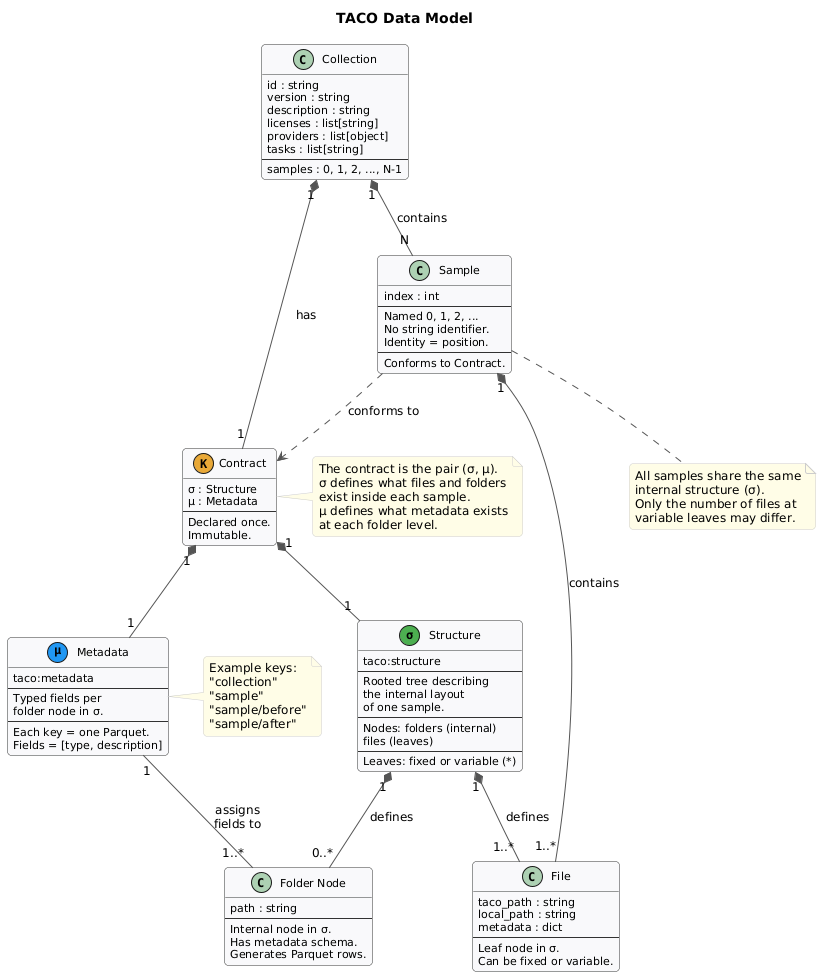
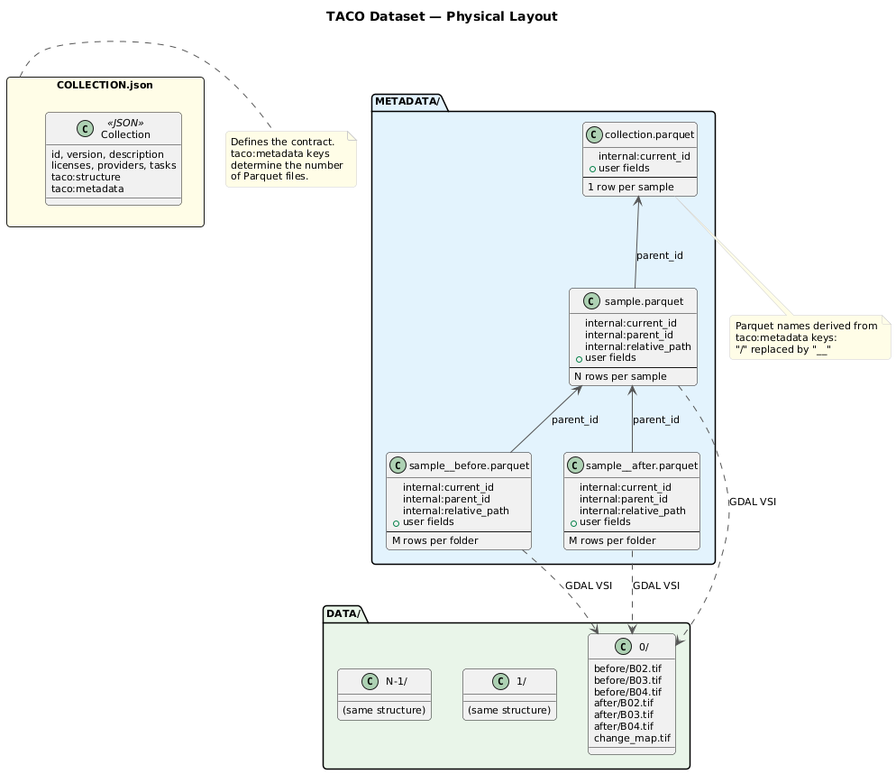
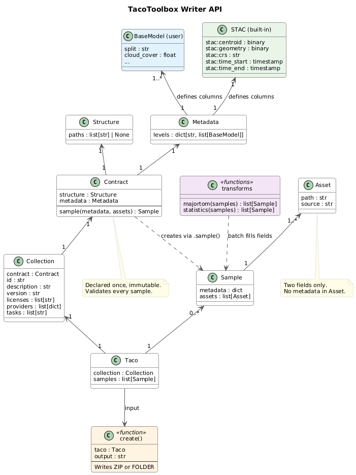
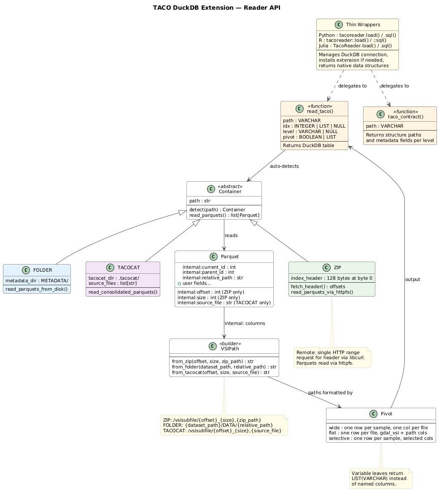

This is version 3.0.0 of the TACO specification, released on April 13, 2026. The specification uses Calendar Versioning (CalVer) with the format YYYY.MM.PATCH. All components in the TACO ecosystem (spec, toolbox, DuckDB extension) share the same version number.
This version is NOT backward compatible with v2 datasets. See Section 9 for migration details.
The key words "MUST", "MUST NOT", "SHOULD", "SHOULD NOT", and "MAY" in this document are to be interpreted as described in RFC 2119. Normative requirements use these keywords in uppercase. All other text is explanatory.
TACO (Transparent Access to Cloud-Optimized datasets) is a specification for organizing AI-ready Earth Observation datasets. It defines how data files and metadata are structured, stored, and accessed together as a single unit.
The core problem TACO solves is that there is no standard way to package EO datasets for machine learning. A training dataset is not just a collection of files. It is a collection of samples, where each sample may contain multiple files organized in a hierarchy with metadata at each level. Existing solutions address parts of this problem but not all of it.
STAC is the most flexible model for organizing geospatial metadata. Its four abstractions (Collection, Catalog, Item, and Asset) can represent virtually any dataset structure, including deeply nested hierarchies. However, STAC stores one JSON file per Item. A dataset with one million samples produces one million JSON files, making efficient queries impossible without a dedicated STAC API server.
STAC-GeoParquet solves the query bottleneck by serializing STAC Items into GeoParquet, where each row represents one Item and Assets are stored as structs. This enables fast SQL filtering with DuckDB or Polars without a server. But the model remains flat. Consider a land cover change detection dataset where each sample contains a before/ folder with pre-change images, an after/ folder with post-change images, and a change_map.tif label. In STAC-GeoParquet this hierarchy cannot be expressed because each Item is a single row with Assets as links. There is no way to attach different metadata to before/ and after/ as separate entities. STAC-GeoParquet is also metadata-only and does not bundle data with metadata.
In TACO, a dataset is a collection of samples that share the same internal structure and the same metadata schema. A sample is an object with metadata and a pointer to data. The internal structure of a sample can be hierarchical, with folders, subfolders, and files at different levels, each with its own metadata. Because the structure is fixed and known in advance, constant-time random access to any sample is possible regardless of dataset size, and metadata is stored in a few Parquet files queryable with DuckDB.
| STAC | STAC-GeoParquet | TACO | |
|---|---|---|---|
| Data model | Collection, Catalog, Item, Asset | Collection, Item (row), Asset (struct) | Collection, Contract, Sample, Asset |
| Metadata storage | 1 JSON per Item | 1 Parquet per Collection | 1 Parquet per tree level |
| Queryable without server | Needs STAC API | Yes | Yes |
| Hierarchical samples | Yes | No (flat rows) | Yes (structural contract) |
| Bundles data + metadata | No | No | ZIP yes, FOLDER no |
| Structural validation | No | No | Yes (contract-first) |
| Constant-time random access | No | Metadata yes, data requires external fetch | Yes, metadata and data via VSI pointers |
| Self-contained portable unit | No | No | ZIP yes, FOLDER no |
TACO is built on three technologies. Apache Parquet stores metadata in a columnar format that supports fast filtering. The VSI path convention provides a universal pointer to data across local disk, cloud storage, and byte ranges inside archives. Cloud-Optimized ZIP packages data and metadata together while enabling direct access to individual files without extraction.
A TACO dataset can exist in two container modes. FOLDER mode stores files directly on disk. ZIP mode bundles everything into one or a few archives.
Apache Parquet is a columnar storage format. Unlike row-oriented formats such as CSV or JSON where each record is stored sequentially, Parquet stores all values of a single column together. This layout enables two properties that are critical for TACO.
The first is predicate pushdown. Each Parquet file is divided into row groups, and each row group stores min/max statistics for every column. When a query includes a filter such as WHERE cloud_cover < 10, the reader inspects the statistics and skips entire row groups where the minimum cloud cover exceeds 10. Combined with DuckDB, this allows filtering millions of samples in milliseconds without reading the full file.
The second is projection pushdown. Because columns are stored independently, reading only the id and time_start columns of a Parquet file with 50 columns does not require touching the other 48. This is important for TACO because metadata tables can have many columns but most queries only need a few.
A TACO dataset MUST store all metadata in Parquet files. Each level of the sample hierarchy gets its own Parquet file, and each file can be queried independently.
A conformant reader MUST load the Parquet metadata into memory at open time. After that, accessing sample N is a direct index lookup, O(1). This is what makes random access constant-time regardless of dataset size.
TACO uses the VSI (Virtual File System) path convention to address data files. A VSI path is a string that encodes how to reach a file regardless of where it lives, whether on local disk, HTTP, S3, Google Cloud Storage, or inside a byte range of an archive.
/vsicurl/https://example.com/scene.tif reads from HTTP
/vsis3/bucket/scene.tif reads from S3
/vsigs/bucket/scene.tif reads from Google Cloud
/vsiaz/container/scene.tif reads from AzureThe most important path form for TACO is /vsisubfile/. It addresses a byte range from any source by specifying an offset and size.
/vsisubfile/1024_4096,/data/archive.zipThis reads 4096 bytes starting at byte 1024 inside archive.zip, without extracting the archive. Paths are chainable, so byte-range access works on remote files too.
/vsisubfile/1024_4096,/vsicurl/https://hf.co/dataset.zipThis reads 4096 bytes starting at byte 1024 from a remote ZIP over HTTP.
A conformant reader MUST construct VSI paths at runtime. In ZIP mode, the reader MUST look up byte offsets and sizes from Parquet columns and construct /vsisubfile/ paths. In FOLDER mode, the contract and the sample index are sufficient to build the path directly (e.g. DATA/42/before/B02.tif), no Parquet lookup required.
TACO does not depend on any specific library to resolve VSI paths. GDAL is the most widely used implementation that natively understands this convention (via rasterio, QGIS, gdalwarp in Python and C++, sf and terra in R, ArchGDAL in Julia). However, any implementation that can parse the path format and perform the corresponding byte-range reads is a valid TACO reader. The specification defines the path format, not the implementation.
A cloud-optimized ZIP is a valid ZIP archive. Any standard ZIP tool can open it. The difference is an index header at byte 0 containing direct byte offsets to the Parquet metadata files inside the archive. A specialized reader uses this index header to jump straight to the Parquets without reading the Central Directory at the end of the file.
The access sequence works as follows. The index header points to the Parquet files. The Parquet files contain the information needed to construct VSI paths that point to the data. From the first byte of the archive to any file inside it, this requires three reads.
A TACO ZIP MUST include an index header at byte 0 with offsets to all Parquet files in METADATA/ and to COLLECTION.json. All files inside a TACO ZIP MUST use STORE mode (no compression). This is required because /vsisubfile/ operates on raw byte ranges; compressed entries would require decompressing the entire entry before any read. A TACO ZIP with compressed entries is invalid.
A secondary benefit of STORE mode is compatibility with Content-Defined Chunking (CDC) on platforms like HuggingFace. CDC splits files into variable-sized chunks based on content using a rolling hash. Because STORE mode preserves the raw bytes of each file inside the archive, when a ZIP is recreated with one file changed out of thousands, the bytes of the unchanged files remain recognizable to the rolling hash even if their position within the ZIP has shifted. This means only the changed chunks are uploaded. Producers SHOULD distribute TACO ZIPs on CDC-aware platforms to minimize transfer costs when updating datasets.
TACO is guided by five design principles.
Self-contained and portable. A TACO dataset is serverless. All data and metadata live together in the same unit, whether it is a ZIP file or a directory. No database, no API server, no external catalog is needed to query or use the dataset.
Cloud-optimized. The format supports partial reads and efficient byte-range access without downloading or extracting archives. Cloud-optimized ZIP places an index header at byte 0 with direct offsets to the Parquet files, bypassing the Central Directory. Parquet enables predicate and projection pushdown for fast metadata filtering. VSI paths construct byte-range pointers to access any data file.
Contract-first. The structure of a dataset is declared before any data is written. The contract specifies what files exist inside each sample and what metadata exists at each level. Every sample is validated against this contract on insertion, eliminating an entire class of bugs where samples have missing files, unexpected fields, or inconsistent layouts.
FAIR-compliant. TACO implements the FAIR principles (Findable, Accessible, Interoperable, Reusable) through standardized metadata with persistent identifiers, clear licensing fields, spatial and temporal extent, and format interoperability via Parquet and the VSI path convention.
Language-agnostic. The reader is a native DuckDB extension. Any language with a DuckDB client, Python, R, Julia, or others, can query TACO datasets with the same SQL interface.
TACO's contract-first approach makes a deliberate tradeoff. The structure of a dataset is fixed at creation time and cannot be changed without creating a new version (see Section 6). This means TACO is not suitable for datasets that require a dynamic or evolving structure within a single version.
This tradeoff is intentional. AI training datasets do not change structure. A dataset is defined, built, and used. The samples may grow in number, but the internal layout of each sample, what files it contains and what metadata it carries, is stable by design. TACO is built for this pattern. In exchange for structural immutability, TACO provides constant-time access, structural validation, and the guarantee that every sample is complete and consistent.
If your use case requires adding new file types or metadata fields to existing samples without versioning, TACO is not the right format.

This section formalizes the data model introduced in Section 2.
A contract is a pair (σ, μ) where σ is the structure and μ is the metadata schema. The contract MUST be declared once and is immutable within a dataset version. Every sample added to a dataset MUST conform to its contract. Changes to the contract require a new dataset version (see Section 6).
The structure describes the internal organization of a single sample as a tree. The root of the tree represents the sample itself. Internal nodes represent groups (folders). Leaves represent data elements (files).
The structure is serialized as taco:structure, an array of relative file paths from the sample root to each leaf. Folders are inferred from path segments.
A leaf can be fixed or variable.
A fixed leaf produces exactly one file per sample. Its name is a literal string declared in the structure (e.g. B02.tif). The literal name is the leaf's unique identifier within its parent folder.
A variable leaf produces a number of files that varies across samples, bounded by a range [a, b] where 0 <= a <= b. It MUST be declared with a mandatory prefix followed by * and the range prefix*[a,b].ext. The prefix is the leaf's unique identifier within its parent folder. The * is not a filesystem glob. It is a cardinal index that takes values 0, 1, ..., k_s - 1 where a <= k_s <= b for sample s. Each file MUST be named prefixj.ext where j is the index.
The index set {0, ..., b-1} partitions into a deterministic subset D = {0, ..., a-1} and a nondeterministic subset N = {a, ..., b-1}. Every index in D MUST be instantiated in every sample. An index j in N is instantiated in sample s if and only if j < k_s.
All children of the same folder MUST have distinct identifiers (sibling uniqueness). For fixed leaves, the identifier is the literal name. For variable leaves, the identifier is the prefix. Fixed names and variable prefixes are compared against each other; no two siblings MAY share the same identifier, regardless of whether they are fixed or variable.
When taco:structure is null, each sample is a single file with no internal structure.
{ "taco:structure": null }CloudSEN12 (each sample is a folder with 3 fixed files)
{
"taco:structure": [
"s2_l1c.tif",
"s2_l2a.tif",
"target.tif"
]
}Change detection (each sample has two subfolders and a standalone file)
{
"taco:structure": [
"before/B02.tif",
"before/B03.tif",
"before/B04.tif",
"after/B02.tif",
"after/B03.tif",
"after/B04.tif",
"change_map.tif"
]
}Multitemporal S2 (each sample has between 4 and 16 images)
{ "taco:structure": ["img*[4,16].tif"] }This produces files img0.tif, img1.tif, ..., img{k_s - 1}.tif where 4 <= k_s <= 16. The first 4 (indices 0-3) are deterministic and always present. Indices 4-15 are nondeterministic.
Mixed fixed and variable in the same folder (3 fixed bands plus a variable number of masks)
{
"taco:structure": [
"before/B02.tif",
"before/B03.tif",
"before/B04.tif",
"before/mask*[1,5].tif"
]
}Sibling identifiers under before/ are B02 (fixed), B03 (fixed), B04 (fixed), and mask (variable prefix). All distinct.
TACO reserves three characters and sequences for system use. Each has a specific scope where it is prohibited.
Colon (:) is the namespace separator for metadata field names (e.g. stac:centroid, internal:parent_id). It is expected and allowed in metadata field names. It MUST NOT appear in folder names, file names, or taco:metadata level keys.
Forward slash (/) is the path separator in taco:structure and internal:relative_path, and the level separator in taco:metadata keys (e.g. sample/before). It is expected and allowed in composed paths and level keys. It MUST NOT appear in folder names or file names themselves.
Double underscore (__) is the filesystem escape of / in Parquet filenames on disk. The conversion is bijective and automatic. sample/before in the data model corresponds to sample__before.parquet on disk. It MUST NOT appear in folder names, file names, or metadata field names.
| Character | Role | Allowed in | MUST NOT appear in |
|---|---|---|---|
: | Namespace separator | Metadata field names (stac:centroid) | Folder names, file names, level keys |
/ | Path and level separator | taco:structure paths, taco:metadata level keys | Folder names, file names |
__ | Filesystem escape of / | Parquet filenames (sample__before.parquet) | Folder names, file names, metadata field names |
The metadata schema assigns a set of typed fields to every non-leaf node of the dataset tree. Non-leaf nodes are the collection node (depth 0) and every internal node of the structure (the sample root and any folders inside it). Each non-leaf node MUST generate a Parquet table with one row per child and one column per field.
The metadata schema is serialized as taco:metadata, an object where each key is a path to a non-leaf node and each value is an object mapping field names to [type, description] pairs.
Field types MUST be types supported by Apache Parquet.
The keys follow a naming convention. collection refers to the dataset node whose children are the samples. sample refers to each sample whose children are its direct contents (files and folders). Below sample, folders use their literal name separated by / because the structure guarantees they are the same in every sample.
Each key in taco:metadata identifies a folder node in the structure. Because the structure is the same for all samples, that folder exists in every sample with the same children and the same schema. This means all instances of that folder across all samples can be stacked into a single Parquet table. One key, one Parquet. The full set of tables is known before any data is inserted.
Users MUST NOT create metadata fields with the internal: prefix. This prefix is reserved for system columns (see Section 7.2).
CloudSEN12
{
"taco:metadata": {
"collection": {
"centroid": ["binary", "Center point in EPSG:4326 (WKB)"],
"geometry": ["binary", "Spatial footprint (WKB)"],
"crs": ["string", "Coordinate reference system"],
"time_start": ["timestamp[us]", "Acquisition timestamp"],
"cloud_cover": ["double", "Cloud cover percentage (0-100)"],
"split": ["string", "Dataset split (train, val, test)"]
},
"sample": {
"resolution": ["double", "Spatial resolution in meters"],
"num_bands": ["int32", "Number of bands in file"]
}
}
}collection generates a Parquet table with one row per sample (0, 1, 2, ...). sample generates a Parquet table with one row per file inside each sample (s2_l1c.tif, s2_l2a.tif, target.tif), so 3 rows per sample.
Change detection
{
"taco:metadata": {
"collection": {
"centroid": ["binary", "Sample center point (WKB)"],
"geometry": ["binary", "Sample spatial footprint (WKB)"],
"crs": ["string", "Coordinate reference system"],
"split": ["string", "Dataset split"],
"change_ratio": ["double", "Percentage of changed pixels"]
},
"sample": {
"time_start": ["timestamp[us]", "Acquisition timestamp"],
"cloud_cover": ["double", "Cloud cover percentage"],
"sensor": ["string", "Sensor name"]
},
"sample/before": {
"resolution": ["double", "Spatial resolution in meters"],
"num_bands": ["int32", "Number of bands"]
},
"sample/after": {
"resolution": ["double", "Spatial resolution in meters"],
"num_bands": ["int32", "Number of bands"]
}
}
}collection has one row per sample. sample has 3 rows per sample (before, after, change_map.tif). sample/before has 3 rows per before folder (B02, B03, B04). sample/after has 3 rows per after folder.
A collection is defined by a single COLLECTION.json file. This file MUST contain the contract (taco:structure and taco:metadata) and dataset-level descriptive fields. In TACO, samples have no string identifiers. They are indexed 0, 1, 2, ..., N-1. A sample's identity is its position in the collection.
| Field | Type | Required | Description |
|---|---|---|---|
id | string | MUST | Dataset identifier |
dataset_version | string | MUST | Dataset version (SemVer, see Section 6) |
description | string | MUST | Dataset description |
licenses | list[string] | MUST | License identifiers (e.g. CC-BY-4.0) |
providers | list[object] | MUST | Dataset providers with name and roles |
tasks | list[string] | MUST | ML task types (e.g. segmentation, classification) |
taco:structure | list or null | MUST | Structure contract σ |
taco:metadata | object | MUST | Metadata contract μ |
title | string | MAY | Human-readable title |
curators | list[object] | MAY | Dataset curators |
keywords | list[string] | MAY | Keywords for discovery |
extent | object | MAY | Spatial and temporal extent |
The contract-first approach guarantees several properties without additional enforcement.
Every file in the dataset is addressed by exactly one pair (sample index, path). The path is fixed by the contract. No directory listing, no file scanning, no search. In FOLDER mode the index and the contract are sufficient to construct the path directly, for example DATA/42/before/B02.tif. In ZIP mode the reader looks up the byte offset and size from the Parquet metadata and constructs /vsisubfile/offset_size,/vsicurl/https://hf.co/dataset.zip. In both cases, access is O(1) regardless of dataset size.
Any subset of samples forms a valid collection under the same contract. Partitioning a dataset does not require rewriting the contract or restructuring the data.
Two collections with the same contract can be concatenated into a single collection by appending samples and re-indexing.
A TACO dataset MUST use Semantic Versioning (SemVer) for the dataset_version field in COLLECTION.json. The versioning scheme is defined by backward compatibility of consumer code. If code that reads version X can also read version Y without modification, the change from X to Y is backward compatible.
PATCH (e.g. 1.0.0 → 1.0.1). The contract is unchanged and no samples are added. Changes include fixing incorrect metadata values, correcting corrupted data files, or updating dataset-level fields in COLLECTION.json (description, keywords, extent). Consumer code is unaffected.
MINOR (e.g. 1.0.0 → 1.1.0). The contract is unchanged. New samples are added under the same contract. Consumer code is unaffected because the structure and schema are identical; there is simply more data.
MAJOR (e.g. 1.0.0 → 2.0.0). The contract changes in a backward-compatible way. Changes include adding new fixed leaves to taco:structure (existing leaves unchanged), adding new fields to taco:metadata (existing fields unchanged), or adding new folder levels. Consumer code continues to work because it can ignore new files and new fields. However, the structural contract has grown, so consumers that validate against the contract or access the new files must update their expectations.
If the contract changes in a backward-incompatible way, producers MUST create a new dataset with a new id instead of incrementing the version. Backward-incompatible changes include removing or renaming files in taco:structure, removing or renaming fields in taco:metadata, changing field types, or restructuring the sample hierarchy.
The test is simple. Does code that reads version X still work on version Y without modification? If yes, it is a version bump (major if the contract changed, minor if only samples were added, patch if only metadata was corrected). If no, it is a new dataset.
FOLDER mode supports incremental updates. Adding samples is an append operation; create new directories in DATA/, append rows to the Parquet files in METADATA/, and update COLLECTION.json. This makes FOLDER mode the natural choice for datasets under active development, including continuous ingestion of new samples as they become available.
ZIP mode is immutable. Any change requires recreating the archive. This makes ZIP mode suitable for stable releases. When distributing updated ZIPs on CDC-aware platforms (see Section 3.3), only the changed chunks are transferred.
Producers SHOULD use FOLDER mode during development and iteration, and publish stable versions as ZIP for distribution. Converting between modes does not change data or metadata, only the packaging.

This section describes how the data model materializes on disk.
A TACO dataset MUST have three components on disk.
dataset/
├── DATA/
│ ├── 0/
│ │ ├── before/
│ │ │ ├── B02.tif
│ │ │ ├── B03.tif
│ │ │ └── B04.tif
│ │ ├── after/
│ │ │ ├── B02.tif
│ │ │ ├── B03.tif
│ │ │ └── B04.tif
│ │ └── change_map.tif
│ ├── 1/
│ │ └── ...
│ └── ...
├── METADATA/
│ ├── collection.parquet
│ ├── sample.parquet
│ ├── sample__before.parquet
│ └── sample__after.parquet
└── COLLECTION.jsonDATA/ MUST contain the data files. Each sample MUST be a directory named by its integer index (0, 1, 2, ...). The internal organization MUST mirror taco:structure.
METADATA/ MUST contain one Parquet file per key in taco:metadata. Each filename MUST be the key with / replaced by __ (see Section 5.3).
COLLECTION.json is defined in Section 5.5.
TACO adds system columns to each Parquet file. These columns use the reserved prefix internal:. Users MUST NOT create fields with this prefix.
| Column | Description | Present in |
|---|---|---|
internal:current_id | Row index within this Parquet (0-indexed) | All Parquets |
internal:parent_id | Index of parent row in previous level Parquet | All except collection |
internal:relative_path | Relative path from DATA/ to this node | All except collection |
internal:offset | Byte offset of this file inside the ZIP archive | ZIP only |
internal:size | Byte size of this file inside the ZIP archive | ZIP only |
internal:source_file | Source ZIP filename | TACOCAT only |
A conformant writer MUST include internal:current_id and internal:relative_path in all Parquets, and internal:parent_id in all Parquets except collection. In ZIP mode, the writer MUST also include internal:offset and internal:size for every data file.
The reader constructs VSI paths at runtime. In ZIP mode, the path is /vsisubfile/{offset}_{size},{zip_path} using internal:offset and internal:size. In FOLDER mode, the path is constructed from the contract and the sample index (DATA/{idx}/{structure_path}), no Parquet lookup required.
A cloud-optimized ZIP (see Section 3.3) packages the entire dataset as a single archive. The index header at byte 0 MUST store offsets to all Parquet files in METADATA/ and to COLLECTION.json. All files MUST use STORE mode (no compression) to enable byte-range access via /vsisubfile/.
ZIP containers are immutable. Updating a dataset requires recreating the archive (see Section 6.3).
A FOLDER container stores the dataset as a plain directory. The directory structure is identical to what exists inside a ZIP container. Converting between FOLDER and ZIP does not change the data or metadata, only the packaging.
FOLDER mode supports appending new samples without recreating any existing files. This makes it the preferred container for datasets that are built incrementally or updated continuously (see Section 6.3).
When a dataset is distributed as multiple ZIP files, querying across all of them requires opening each one individually. TACOCAT consolidates all metadata from multiple ZIP files into a single directory.
.tacocat/
├── collection.parquet
├── sample.parquet
├── sample__before.parquet
├── sample__after.parquet
└── COLLECTION.jsonEach consolidated Parquet merges the corresponding Parquets from all source ZIPs. An additional column internal:source_file MUST track which ZIP each row came from. This enables queries across the entire dataset using DuckDB without opening any ZIP file.
To access data, the reader constructs VSI paths using internal:offset, internal:size, and internal:source_file to point directly into the correct source ZIP.
The COLLECTION.json in TACOCAT merges metadata from all partitions. The consolidation process MUST validate that all partitions share the same contract (taco:structure and taco:metadata). Sample counts are summed. Spatial extents merge into a global bounding box. Temporal extents span from the earliest start to the latest end.
An additional field taco:sources SHOULD preserve individual partition extents for query routing, allowing identification of which ZIP files contain relevant data for a specific region or time window without opening every partition.
{
"taco:sources": {
"count": 3,
"files": ["europe.zip", "asia.zip", "americas.zip"],
"extents": [
{"file": "europe.zip", "spatial": [-10, 30, 45, 70], "temporal": ["2023-01-01", "2023-12-31"]},
{"file": "asia.zip", "spatial": [60, -10, 150, 55], "temporal": ["2023-01-01", "2023-12-31"]},
{"file": "americas.zip", "spatial": [-170, -55, -35, 75], "temporal": ["2023-01-01", "2023-12-31"]}
]
}
}This section describes the reference implementations. The API layer is not normative; conformant implementations MAY use different interfaces as long as they produce and consume valid TACO datasets.

TacoToolbox is a Python library for creating TACO datasets.
Structure represents the internal file layout of a sample. Created from a list of relative paths, or None when taco:structure is null.
Metadata maps tree levels to Pydantic BaseModels. Each key is a level path (e.g. "collection", "sample", "sample/before"). Each value is a list of Pydantic models whose fields become the Parquet columns for that level.
Contract combines a Structure and a Metadata. It is declared once and is immutable. It validates every sample on creation.
Asset represents a single data file. It has two fields, path (the key from the structure, e.g. "before/B02.tif") and source (where the data lives on disk, e.g. "/data/B02.tif").
Collection holds dataset-level metadata and the contract (see Section 5.5).
Taco combines a Collection with a list of validated samples.
create(taco, output) writes the Taco to disk. Output path ending in .zip creates a cloud-optimized ZIP. Otherwise creates a FOLDER.
All metadata is defined through Pydantic BaseModels. STAC spatial and temporal fields are provided as a built-in model that can be composed with user-defined models. There is no separate extension mechanism.
from pydantic import BaseModel
from tacotoolbox.models import STAC
class CloudMeta(BaseModel):
split: str
cloud_cover: float
class FileMeta(BaseModel):
resolution: float
num_bands: intSamples are created through contract.sample(), which validates metadata against the Pydantic models and verifies that all required assets are present.
The metadata dictionary is keyed by the same level paths used in the contract. At the "collection" level, fields are provided flat because there is one set of values per sample. At deeper levels ("sample", "sample/before", etc.), entries are keyed by the child name (folder or file) because each child may have different metadata values.
Transforms are optional post-processing functions for metadata fields that benefit from batch computation. They take a list of samples and return a list of samples with additional fields filled.
from tacotoolbox.transforms import majortom
samples = [contract.sample(...), ...]
samples = majortom(samples)from pydantic import BaseModel
from tacotoolbox import Structure, Metadata, Contract, Asset, Collection, Taco, create
from tacotoolbox.models import STAC
class CloudMeta(BaseModel):
split: str
cloud_cover: float
class FileMeta(BaseModel):
resolution: float
num_bands: int
contract = Contract(
structure=Structure(["s2_l1c.tif", "s2_l2a.tif", "target.tif"]),
metadata=Metadata({
"collection": [STAC, CloudMeta],
"sample": [FileMeta],
}),
)
sample = contract.sample(
metadata={
"collection": {
"stac:centroid": wkb_point,
"stac:geometry": wkb_polygon,
"stac:crs": "EPSG:32717",
"stac:time_start": ts,
"stac:time_end": ts,
"split": "train",
"cloud_cover": 23.5,
},
"sample": {
"s2_l1c.tif": {"resolution": 10.0, "num_bands": 13},
"s2_l2a.tif": {"resolution": 10.0, "num_bands": 13},
"target.tif": {"resolution": 10.0, "num_bands": 1},
},
},
assets=[
Asset("s2_l1c.tif", "/data/roi/s2_l1c.tif"),
Asset("s2_l2a.tif", "/data/roi/s2_l2a.tif"),
Asset("target.tif", "/data/roi/target.tif"),
]
)
collection = Collection(
contract=contract,
id="cloudsen12",
description="Cloud segmentation dataset for Sentinel-2",
version="1.0.0",
licenses=["CC-BY-4.0"],
providers=[{"name": "CSIC", "roles": ["producer"]}],
tasks=["segmentation"],
)
taco = Taco(collection=collection, samples=[sample])
create(taco, "cloudsen12.zip")This example demonstrates metadata at multiple levels with intermediate folders.
from pydantic import BaseModel
from datetime import datetime
from tacotoolbox import Structure, Metadata, Contract, Asset, Collection, Taco, create
from tacotoolbox.models import STAC
class ChangeMeta(BaseModel):
split: str
change_ratio: float
class TemporalMeta(BaseModel):
time_start: datetime
cloud_cover: float
sensor: str
class BandMeta(BaseModel):
resolution: float
num_bands: int
contract = Contract(
structure=Structure([
"before/B02.tif",
"before/B03.tif",
"before/B04.tif",
"after/B02.tif",
"after/B03.tif",
"after/B04.tif",
"change_map.tif",
]),
metadata=Metadata({
"collection": [STAC, ChangeMeta],
"sample": [TemporalMeta],
"sample/before": [BandMeta],
"sample/after": [BandMeta],
}),
)
sample = contract.sample(
metadata={
"collection": {
"stac:centroid": wkb_point,
"stac:geometry": wkb_polygon,
"stac:crs": "EPSG:32717",
"stac:time_start": ts_before,
"stac:time_end": ts_after,
"split": "train",
"change_ratio": 0.15,
},
"sample": {
"before": {"time_start": ts_before, "cloud_cover": 5.2, "sensor": "S2A"},
"after": {"time_start": ts_after, "cloud_cover": 8.1, "sensor": "S2B"},
"change_map.tif": {"time_start": ts_after, "cloud_cover": 0.0, "sensor": "S2B"},
},
"sample/before": {
"B02.tif": {"resolution": 10.0, "num_bands": 1},
"B03.tif": {"resolution": 10.0, "num_bands": 1},
"B04.tif": {"resolution": 10.0, "num_bands": 1},
},
"sample/after": {
"B02.tif": {"resolution": 10.0, "num_bands": 1},
"B03.tif": {"resolution": 10.0, "num_bands": 1},
"B04.tif": {"resolution": 10.0, "num_bands": 1},
},
},
assets=[
Asset("before/B02.tif", "/data/t1/B02.tif"),
Asset("before/B03.tif", "/data/t1/B03.tif"),
Asset("before/B04.tif", "/data/t1/B04.tif"),
Asset("after/B02.tif", "/data/t2/B02.tif"),
Asset("after/B03.tif", "/data/t2/B03.tif"),
Asset("after/B04.tif", "/data/t2/B04.tif"),
Asset("change_map.tif", "/data/change_map.tif"),
],
)
collection = Collection(
contract=contract,
id="change-detection",
description="Land cover change detection dataset",
version="1.0.0",
licenses=["CC-BY-4.0"],
providers=[{"name": "University of Valencia", "roles": ["producer"]}],
tasks=["change_detection"],
)
taco = Taco(collection=collection, samples=[sample])
create(taco, "change_detection.zip")
The TACO reader is a native DuckDB extension written in C using the stable C API. Any language with a DuckDB client can read TACO datasets with the same interface. The extension depends on libcurl (via vcpkg) for reading index headers from remote ZIP containers.
INSTALL taco FROM community;
LOAD taco;Reads a TACO dataset and returns a table. The container format (ZIP, FOLDER, TACOCAT) is auto-detected from the path.
path (VARCHAR, required) is where the dataset lives. Supports local paths, S3, HTTP, and HuggingFace. DuckDB autoloads httpfs when it encounters remote protocols. For remote ZIP containers, the extension fetches the index header via a single HTTP range request using libcurl. The Parquets inside the ZIP are then read by DuckDB through httpfs using the offsets from the header.
SELECT * FROM read_taco('/data/cloudsen12.zip');
SELECT * FROM read_taco('s3://bucket/cloudsen12.zip');
SELECT * FROM read_taco('https://example.com/cloudsen12.zip');
SELECT * FROM read_taco('hf://datasets/tacofoundation/cloudsen12/cloudsen12.zip');idx (INTEGER or LIST, default NULL) controls which samples to return. Samples are indexed 0, 1, 2, ..., so idx maps directly to row positions. NULL returns all samples. An INTEGER returns a single sample. A two-element LIST returns a range. This is the most important parameter for ML workflows.
SELECT * FROM read_taco('dataset.zip'); -- all samples
SELECT * FROM read_taco('dataset.zip', idx=5); -- sample 5
SELECT * FROM read_taco('dataset.zip', idx=[0, 100]); -- first 100 sampleslevel (VARCHAR, default NULL) controls which metadata Parquet to read. NULL returns the default view with all levels joined. A string returns a specific Parquet without JOINs, using the same keys as taco:metadata. This is for inspection and debugging, not for typical ML usage.
SELECT * FROM read_taco('dataset.zip'); -- joined view
SELECT * FROM read_taco('dataset.zip', level='collection'); -- collection.parquet
SELECT * FROM read_taco('dataset.zip', level='sample'); -- sample.parquet
SELECT * FROM read_taco('dataset.zip', level='sample/before'); -- sample__before.parquetpivot (BOOLEAN or LIST, default true) controls how VSI paths appear in the result. When true, each file path from taco:structure becomes a named column containing the VSI pointer. The result has one row per sample, ready for a dataloader. When false, the result has one row per file with a single vsi_path column and a path column identifying which file it is. When a LIST of path strings, only those specific files are pivoted into columns and the rest are excluded.
-- Pivoted (default), one row per sample, one column per file
SELECT * FROM read_taco('cloudsen12.zip');
-- sample_id | split | cloud_cover | s2_l1c | s2_l2a | target
-- 0 | train | 23.5 | /vsisubfile/... | /vsisubfile/... | /vsisubfile/...
-- Flat, one row per file
SELECT * FROM read_taco('cloudsen12.zip', pivot=false);
-- sample_id | split | cloud_cover | resolution | num_bands | path | vsi_path
-- 0 | train | 23.5 | 10.0 | 13 | s2_l1c.tif | /vsisubfile/...
-- 0 | train | 23.5 | 10.0 | 13 | s2_l2a.tif | /vsisubfile/...
-- 0 | train | 23.5 | 10.0 | 1 | target.tif | /vsisubfile/...
-- Selective pivot, only specific files
SELECT * FROM read_taco('change_detection.zip', pivot=['before/B02.tif', 'after/B02.tif']);
-- sample_id | split | before/B02.tif | after/B02.tifFor datasets with variable leaves (e.g. img*[4,16].tif in the structure), pivot returns a LIST(VARCHAR) column instead of named columns, because the number of files varies across samples.
SELECT * FROM read_taco('multitemporal_s2.zip');
-- sample_id | split | num_images | vsi_path
-- 0 | train | 4 | [/vsisubfile/..., /vsisubfile/..., ...]
-- 1 | val | 8 | [/vsisubfile/..., /vsisubfile/..., ...]Returns a table describing the contract. Shows the structure paths and metadata fields per level. Works with all container types and remote paths. This is the equivalent of printing an xarray Dataset to see its dimensions and variables before working with it.
The DuckDB extension is the single implementation of the TACO reader. Thin wrappers provide convenience functions in each language.
import tacoreader
df = tacoreader.load("cloudsen12.zip")
df = tacoreader.load("cloudsen12.zip", idx=5)
df = tacoreader.load("cloudsen12.zip", idx=[0, 100], pivot=False)
df = tacoreader.load("cloudsen12.zip", level="sample")
c = tacoreader.contract("cloudsen12.zip")
df = tacoreader.sql("SELECT s2_l1c, target FROM read_taco('cloudsen12.zip') WHERE split = 'train'")library(tacoreader)
df <- tacoreader::load("cloudsen12.zip")
df <- tacoreader::load("cloudsen12.zip", idx = 5)
df <- tacoreader::load("cloudsen12.zip", idx = c(0, 100), pivot = FALSE)
df <- tacoreader::load("cloudsen12.zip", level = "sample")
c <- tacoreader::contract("cloudsen12.zip")
df <- tacoreader::sql("SELECT s2_l1c, target FROM read_taco('cloudsen12.zip') WHERE split = 'train'")using TacoReader
df = TacoReader.load("cloudsen12.zip")
df = TacoReader.load("cloudsen12.zip", idx=5)
df = TacoReader.load("cloudsen12.zip", idx=[0, 100], pivot=false)
df = TacoReader.load("cloudsen12.zip", level="sample")
c = TacoReader.contract("cloudsen12.zip")
df = TacoReader.sql("SELECT s2_l1c, target FROM read_taco('cloudsen12.zip') WHERE split = 'train'")All wrappers manage the DuckDB connection, install and load the extension if needed, and return native data structures (DataFrame in Python, tibble in R, DataFrame in Julia).
TACO v3.0.0 is NOT backward compatible with v2 datasets. Existing v2 datasets MUST be recreated to work with v3 tools. This section documents all breaking changes.
| Aspect | v2 | v3 |
|---|---|---|
| Contract definition | Inferred from first sample at runtime (PIT) | Declared explicitly before any data is written |
| Core abstractions | SAMPLE, TORTILLA, TACO | Contract, Sample, Collection |
| Sample identity | String IDs (id field) | Integer indices (0, 1, 2, ..., N-1) |
| Sample types | FILE or FOLDER (discriminator field) | No type field; structure defined by contract |
| Irregular structures | Padding with __TACOPAD__ placeholders | Variable leaves (prefix*[a,b].ext) |
| Metadata storage | Dual system (consolidated levelX.parquet + local __meta__ per folder) | Consolidated only (one Parquet per contract level, no local metadata) |
| Parquet naming | By depth (level0.parquet, level1.parquet, ...) | By semantic path (collection.parquet, sample.parquet, sample__before.parquet, ...) |
| Extension system | Formal extend_with() interface with SampleExtension, TortillaExtension, TacoExtension classes | Pydantic BaseModels composed in the contract |
| Structural constraint | PIT (Position-Invariant Tree), two rules | Contract (σ, μ), structure and metadata schema declared as a pair |
| Library dependency | GDAL required | VSI path convention; GDAL is one implementation, not a dependency |
| Reader implementation | TacoReader (Python classes with lazy query, DuckDB internally) | Native DuckDB extension (read_taco), thin wrappers in Python/R/Julia |
| Writer implementation | TacoToolbox (Sample, Tortilla, Taco classes) | TacoToolbox (Structure, Metadata, Contract, Asset, Collection, Taco) |
| ZIP extension | .tacozip | .zip |
| TACOCAT format | Binary file with 128-byte header, fixed 7-entry index table | Directory with merged Parquets and COLLECTION.json |
| TACOLLECTION | Separate TACOLLECTION.json file | Merged into TACOCAT COLLECTION.json via taco:sources field |
| Dataset versioning | dataset_version field, no formal scheme | SemVer with defined semantics (PATCH/MINOR/MAJOR, see Section 6) |
| Spec versioning | SemVer (2.0.0) | CalVer (YYYY.MM.PATCH) |
| Hierarchical navigation | read() method traversing __meta__ files | SQL queries via read_taco() with level parameter |
| Filtering | filter_bbox(), filter_datetime() with cascading JOINs | SQL WHERE clauses on Parquet columns |
| Concatenation | concat() with column modes | SQL UNION or TACOCAT consolidation |
The most fundamental change between v2 and v3 is how dataset structure is defined.
In v2, the structure was inferred at runtime through the PIT (Position-Invariant Tree) constraint. PIT required that all samples at the same hierarchy level be structurally isomorphic, meaning same number of children, same identifiers at same positions, same types. The writer accepted the first sample and enforced that all subsequent samples matched its structure. If they did not match, padding placeholders (__TACOPAD__) were inserted to maintain compliance.
In v3, the structure is declared explicitly as a contract before any data is written. The contract is a pair (σ, μ) where σ defines the file layout and μ defines the metadata schema. Every sample is validated against the contract on insertion. There is no inference, no padding, and no runtime structural discovery.
This change has several consequences. The set of Parquet files is known before any data exists, because it is determined entirely by the contract. Parquet files are named by semantic path (sample__before.parquet) instead of depth (level1.parquet), making them self-describing. Variable-count files are handled through variable leaves (prefix*[a,b].ext) instead of padding, eliminating wasted space and artificial samples.
v2 implemented a dual metadata system. Consolidated metadata (METADATA/levelX.parquet) supported SQL queries across the entire dataset. Local metadata (__meta__ files inside each folder in DATA/) supported hierarchical navigation without loading the full dataset. The reader chose the optimal source based on the query.
v3 removes local metadata entirely. There are no __meta__ files. All metadata lives in the consolidated Parquet files in METADATA/. Hierarchical navigation is handled through SQL JOINs on internal:parent_id via read_taco(), not through filesystem traversal of __meta__ files.
This simplification is possible because the contract makes the set of Parquet files predictable. In v2, local metadata was necessary because the reader could not know the structure in advance; it had to read __meta__ files to discover what a folder contained. In v3, the contract declares the structure, so the reader knows what to expect at every level.
v2 implemented the reader as a Python library (TacoReader) with its own lazy query interface, backend system (ZipBackend, FolderBackend, TacoCatBackend), and hierarchical navigation through read() methods. DuckDB was used internally but hidden behind the TacoDataset and TacoDataFrame classes.
v3 implements the reader as a native DuckDB extension written in C. The extension exposes read_taco() and taco_contract() as SQL functions. Any language with a DuckDB client can read TACO datasets with the same interface. Thin wrappers in Python, R, and Julia provide convenience functions but contain no reading logic.
This change eliminates the need for separate backend implementations per format. The DuckDB extension handles ZIP, FOLDER, and TACOCAT detection and path construction internally.
v2 defined a formal extension system with abstract base classes (SampleExtension, TortillaExtension, TacoExtension) and a unified extend_with() interface. Extensions implemented get_schema() and _compute() methods, supporting both computational and schema-only modes.
v3 replaces extensions with Pydantic BaseModels composed in the contract. Metadata fields are defined as model attributes with types. The STAC model is provided as a built-in that can be composed with user-defined models. There is no separate extension mechanism; all metadata is part of the contract.
Transforms in v3 serve a similar role to v2 TORTILLA extensions, they are batch functions that compute metadata across all samples. But they are plain functions, not abstract classes.
v2 implemented TACOCAT as a binary file with a fixed 128-byte header containing format magic, version, max depth, and a 7-entry index table. TACOLLECTION was a separate JSON file for merging dataset-level metadata across partitions.
v3 implements TACOCAT as a directory (.tacocat/) containing merged Parquet files and a single COLLECTION.json. The binary header is gone. TACOLLECTION is gone as a separate concept; its functionality is absorbed into the TACOCAT COLLECTION.json through the taco:sources field.
There is no automatic migration tool from v2 to v3. The changes to the data model (contract-first vs PIT-inferred, integer indices vs string IDs, semantic Parquet naming vs depth-based naming) are too fundamental for mechanical conversion.
To migrate a v2 dataset, producers MUST define a v3 contract that captures the structure and metadata schema of the existing dataset, then recreate the dataset using TacoToolbox v3. The data files themselves (GeoTIFFs, NetCDFs, etc.) do not need to change; only the packaging and metadata need to be rewritten.
TACO was born in Valencia, Spain, at the Image and Signal Processing (ISP) group of the Universitat de València. Every Friday, we met at TKOTACO, a one-euro taco restaurant, to talk about series, anime, memes, data, and sometimes new deep learning papers. The regular crew was Julio Contreras, Oscar Pellicer, Simon Donike, Chen Ma (HIT), and me (@csaybar). When David Montero (University of Leipzig) visited, he always joined us.
During one of those Friday meetings, frustrated after spending over a month harmonizing deep learning datasets for cloud detection, we sketched a general solution. We wanted something simple for our problems and ISP datasets. That day, TACOv1 was born, a format with a custom BLOB structure and Parquet metadata. The idea was simple, build the infrastructure around GDAL and the DataFrame concept.
The format had many flaws, but the core idea was sound. At ESA Living Planet 2025, several conversations shaped TACOv2. Jérémy Anger (Kayrros/Université Paris-Saclay) suggested we abandon the custom BLOB format and use ZIP instead, which became a turning point. Conversations with Mikolaj Czerkawski (Asterisk) about MajorTOM influenced much of the lazy loading architecture. Nils Lehmann and Adam Stewart (University of Munich, TorchGeo) brought years of experience with deep learning datasets that proved critical for API design. OceanTACO, a collaboration with Nils Lehmann (TUM), stress-tested v2 on ocean remote sensing data and exposed limitations that directly informed v3's contract model. Nate Mankovich (ISP) helped us define PIT (Position-Invariant Tree), which became the structural foundation of v2. Luis Gómez-Chova and Gustau Camps-Valls (ISP) have been discussing what TACO is and should be since day one.
TACOv2 worked. We published datasets, people used them, and the tools held up for small and medium collections. After that, Asterisk Labs took TACO forward and built dataset after dataset at production scale. Every one taught us something new about where v2 broke.
TACOv3 is smaller than v2. Fewer concepts, fewer files on disk, fewer abstractions. The contract replaced PIT, extensions, and padding with a single declaration. The DuckDB extension replaced three Python backend classes with one C implementation. The __meta__ files are gone. The binary TACOCAT header is gone. What remains is what was always the core idea from that Friday in Valencia, organize data and metadata together so that a machine learning researcher can query, filter, and load a dataset without thinking about formats.
This is still TACO, a format born in a one-euro taco restaurant. The code is open source and always will be.